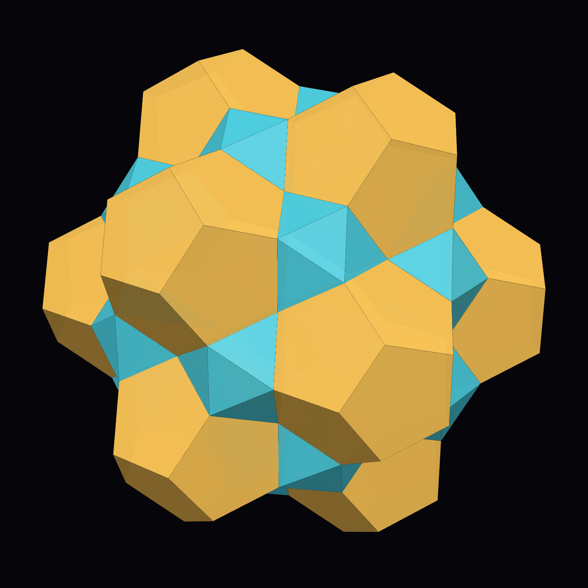
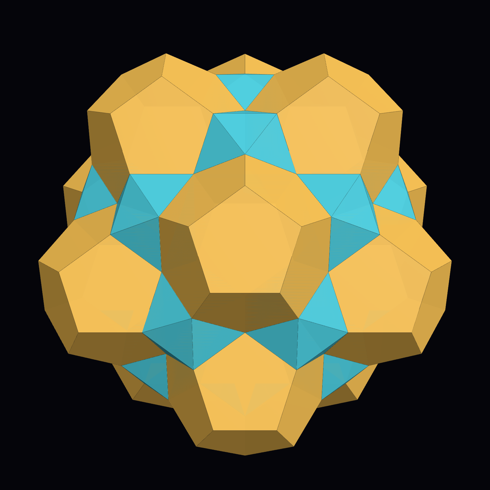
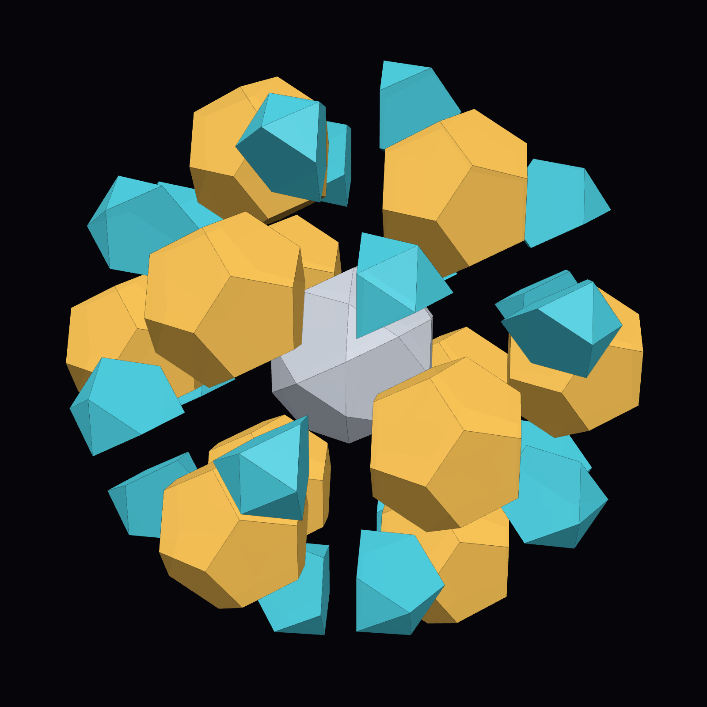
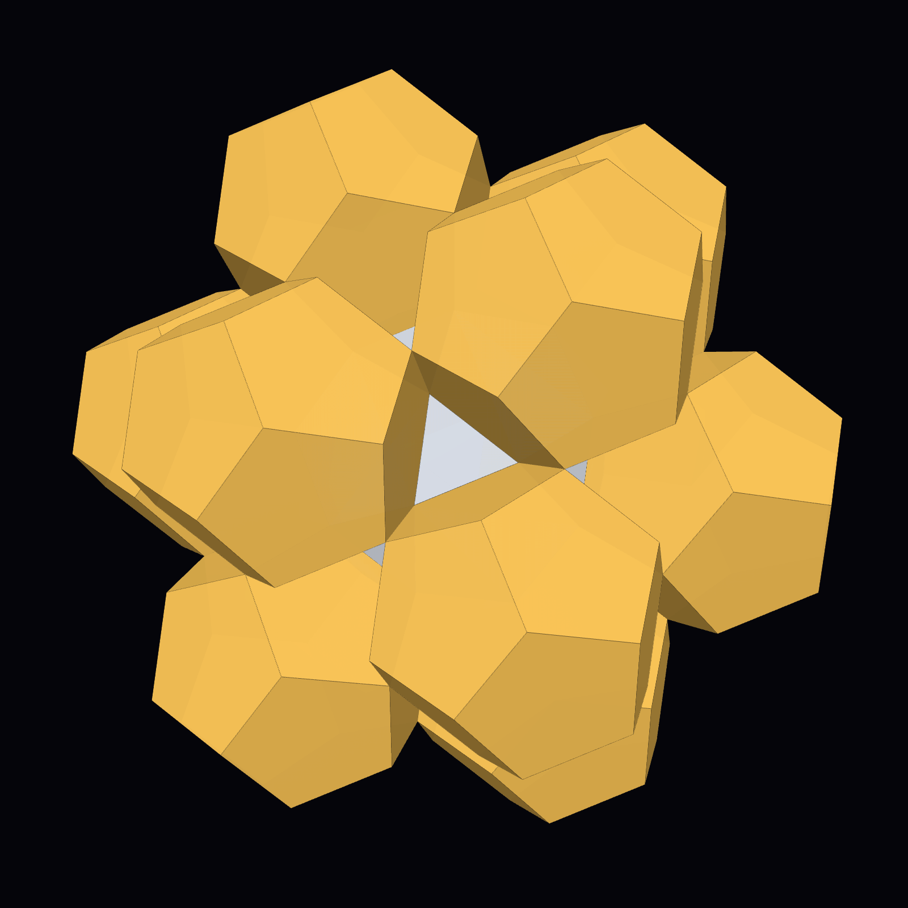
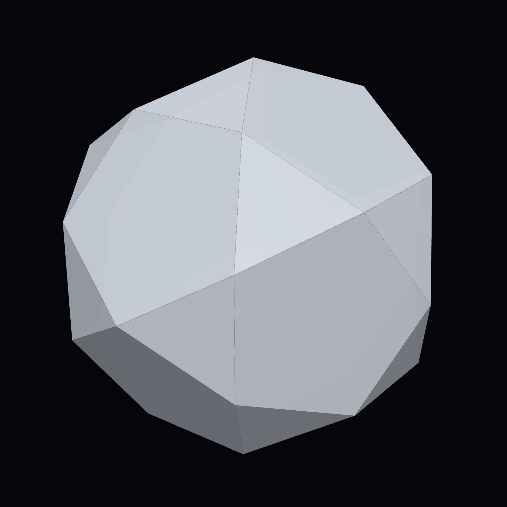

An icosidodecahedron, 12 regular dodecahedra and 20 tridiminished icosahedra closing exactly, face to face, in ordinary space
The DICTO-Star is the centre of DICTO's builds: first physically, from PET bottle caps and their security rings around an icosidodecahedron, and then in Polyhedraverse (by 4 October 2026). DICTO made it as a three-dimensional analogue of the four-dimensional fold of the 13-dodecahedron cluster: in the 120-cell, the 12 dodecahedra around a central one fold together and close their gaps; in flat space, DICTO's idea was that bi- and tri-diminished icosahedra (J62, J63) could close them instead. A computer search in Kaleidohedra confirmed the pattern exactly, showed that it is forced, and checked how far it continues with regular pieces.



| Piece | Number | Attached on | Dihedral angle at the centre's edges |
|---|---|---|---|
| Icosidodecahedron (centre) | 1 | — | 142.6226° |
| Regular dodecahedron | 12 | each pentagon | 116.5651° |
| Tridiminished icosahedron (J63) | 20 | each triangle, by its triangle bordering only pentagons | 100.8123° |
At each of the 60 edges of the icosidodecahedron, a pentagon meets a triangle. The three angles around the edge (the centre's, the dodecahedron's and the J63's) sum to exactly 360°, and the dodecahedron's face that lies along the edge coincides exactly with a pentagonal face of the J63: the edge is closed with no gap. Every corner of the icosidodecahedron is filled. Unlike the 13-dodecahedron cluster, whose gaps need two extra kinds of filler piece, the DICTO-Star needs no filler; the J63s sit like caps in the 20 three-fold dimples between the dodecahedra (Fig. 4).
Volume: icosidodecahedron (45 + 17√5)/6, twelve dodecahedra (15 + 7√5)/4 each, twenty J63 of 5(3 + √5)/12 − (5 + √5)/8 each; total exactly (195 + 89√5)/3 ≈ 131.3367.


With a whole icosahedron on each triangle (Robert Austin's 2014 virtual model, made in Stella 4D), each icosahedron's three pentagonal pyramids run into the neighbouring dodecahedra. J63 is the icosahedron with exactly those three pyramids removed. In hyperbolic space the whole-icosahedron version is part of the dodecahedral–icosahedral honeycomb; the J63 version is what exists exactly in ordinary space.
Because the three angles at each edge sum to exactly 360°, the star is flat around every edge, so no convex four-dimensional polytope can contain it (a convex polytope's cells must leave less than 360° round each edge in order to fold). The star does not continue into a space-filling by regular pieces: each edge of an icosidodecahedron closes only with a dodecahedron and a J63, which forces the whole star round every icosidodecahedron, and each J63 keeps an outer cap of four triangles that no regular piece closes; the pockets over the caps widen outward, and in packings the gaps join into one labyrinth (about 26%). Two stars can share a dodecahedron along a five-fold axis (centres 4.97980 apart), which gives columns, but no lattice of stars fits. (Studied, not claimed.)
DICTO had already grown the star outward in Polyhedraverse (3–4 October 2026) using stellation pieces, which are not regular-faced. An exact rebuild of DICTO's 4 October shell (245 pieces) fits without overlap but leaves hidden gaps of 0.0067 to 0.263 of an edge between added pieces, and fills 76.2% of its convex hull, confirming what DICTO had noted: it looks closed, but is not closed exactly.
Known and credited: Robert Austin, Icosidodecahedra, Icosahedra, and Dodecahedra (2014), the same arrangement with whole icosahedra as a virtual model in which the pieces overlap; Austin's other cluster posts (2013, 2014, 2015, 2023), which use whole icosahedra, great stellations or icosidodecahedra, never J63; the dodecahedral–icosahedral honeycomb of hyperbolic space; J63 as the vertex figure of the snub 24-cell (Koca et al.); Klitzing's four-dimensional segmentochora, which use the same pieces as cells but not this cluster; a Stewart toroid of genus 11 from 20 J63s, 30 metabidiminished icosahedra and 60 pentagonal antiprisms (no icosidodecahedron or dodecahedra); the Elser–Sloane quasicrystal's three-dimensional slice (icosidodecahedron, dodecahedron, icosahedron and golden-tetrahedron tiles; whole icosahedra, not J63).
Not found (web-level and reference-library search, 2026-10-09, extended the same day): the closed arrangement with tridiminished icosahedra. Not reached: one archived post before Austin's 2013 cluster (offline that day), the Stella forum, printed books (Stewart, Adventures Among the Toroids), non-English sources. The arrangement is simple enough that it may be known somewhere unindexed; this record makes no claim of priority.
Included: data/dicto-star.json (all 33 pieces as vertex lists at edge 1, and the exact volume) and data/checks-id-star.txt (7 checks, all passing, from scripts/verify-id-star.mjs in krp-core v0.14.0: no overlap among the 33 solids by separating axes, all 60 edges closed, every corner filled, exact volumes, and that whole icosahedra do overlap). The star can be built in Polyhedraverse (https://polyhedraverse.dictospheres.com), part of DICTO's open-source apps (github.com/DICTOR-Master/kaleidohedra, concept DOI 10.5281/zenodo.23173809). Previously archived within that record as version 10.5281/zenodo.23256623.